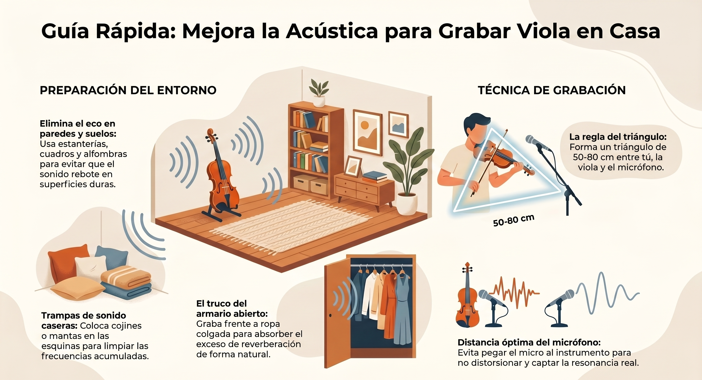

Texto
Preparando el escenario
Antes de comenzar la grabación, es necesario preparar adecuadamente el escenario de trabajo, tanto desde el punto de vista técnico como acústico. Esta fase garantiza una grabación más clara, profesional y segura en términos de privacidad. Para ello, revisa cuidadosamente el fondo para evitar que aparezcan objetos personales, fotografías o documentos. Puedes consultar estas infografías, donde se muestran los mejores ángulos de grabación, para asegurar que se os vea correctamente la postura y mejorar la acústica del lugar donde os grabéis.


Autoría: Ana Isabel Blanco Carmona
Licencia: Creative Commons